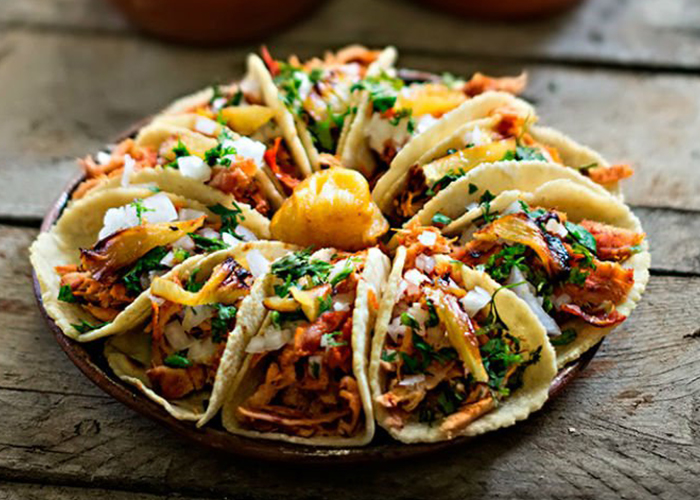

Mucho más que comida...


Pizza casera
20 de enero de 2018

Ingredientes
- 2 tomates maduros(pelados y sin semilla)
- Queso fresco o mozzarella
- Orégano, sal y pimienta
- Jamón o Salame
En un bol colocar la harina espolvorear con la sal, hacer un hueco en el medio, y ahí colocar el aceite, empezar a agregar agua e ir uniendo, hasta que se haga una masa blanda pero que no se pegue en los dedos.
Aceitar una pizzera (de 25 a 26 cm de diámetro para ésta cantidad de harina), colocar la masa y con los dedos estirarla, llevar a horno caliente unos minutitos, retirar, y expandir el tomate al que se le ha quitado la piel, las semillas, se lo licúa condimenta con sal y orégano.
Llevar a secar unos minutitos al horno, para que se cocine el tomate luego colocar el queso, y las lojas de jamón, y pasar nuevamente por el horno hasta que el queso se derrita.

Lorena Martinez
Me parece super bueno, es muy buen dato, gracias...
Tacos al Pastor
10 de enero de 2018
Ingredientes
- 5 tortillas de maíz
- 1/2 kilo de carne
- 3 chorizos parrilleros
- 1 pechuga de pollo
- Cilantro
- Palta
- Piña
- 1 cebolla
- Sal y pimienta
Asa el jitomate en un sartén o comal chico a fuego medio-alto, volteando constantemente, hasta que su piel se haya quemado y empiece a desprenderse, aproximadamente 10 minutos. Pela, corta a la mitad y desecha las semillas. Mientras, hierve suficiente agua en una olla mediana y agrega los chiles guajillo y ancho. Deja que hiervan hasta que se hayan suavizado, aproximadamente 5 minutos.
Coloca los chiles hervidos en el vaso de la licuadora. Agrega los chiles chipotle, ajo, cebolla, vinagre, jugo de naranja, piña picada, clavos de olor, comino, orégano y jitomate asado. Licua hasta tener una salsa homogénea. Coloca la carne en un tazón de vidrio o bolsa con cierre y agrega la salsa asegurándote que cubrir toda la carne. Marina dentro del refrigerador durante por lo menos 4 horas o durante toda la noche.
Precalienta un comal o el asador a fuego medio-alto. Asa los filetes marinados, volteando una vez, hasta que se hayan cocido completamente, aproximadamente 2 minutos por lado. Mientras, asa las rebanadas de piña que se hayan quemado ligeramente, alrededor de 5 minutos por lado. Si lo deseas, puedes barnizarlas con la salsa de la carne mientras se asan. Pica la carne y la piña. Sirve la carne sobre tortillas calientes, agrega piña asada. Añade cilantro y cebolla picada, salsa de tomate y unas gotas de jugo de limón.
Daniel Rodas
Me parece super bueno, es muy buen dato, gracias...